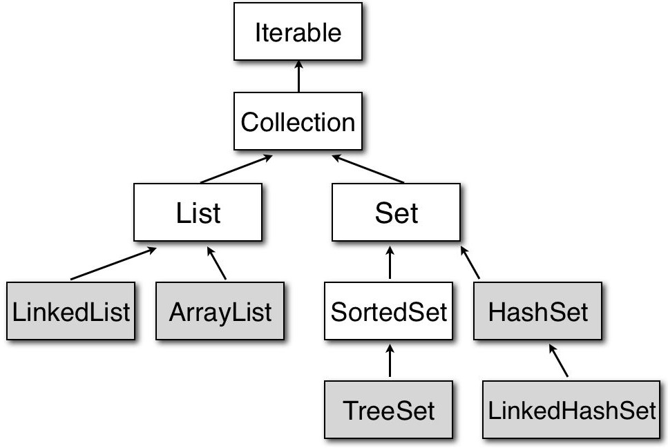
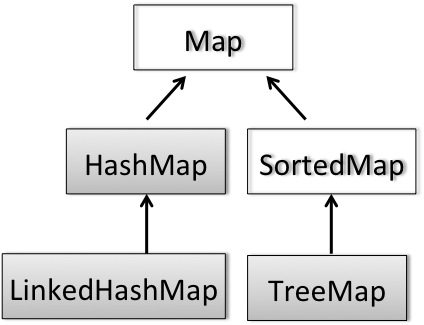
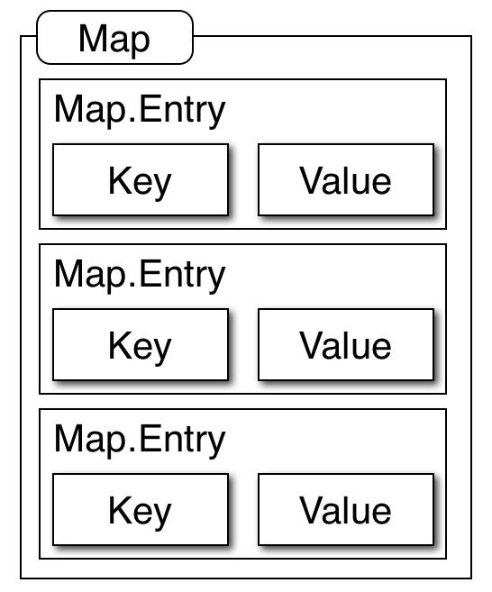

How to use framework
Array in Java＜＜to Basic of Array＞＞
Before explaining Collection Framework, the array of Java is introduced here.
Simple useage of array data : ArrayTest.java
class ArrayTest {
public static void main(String[] args) { // 配列の使用例
int intArray[] = { 1, 2, 3, 4, 5, 6, 7, 8, 9, 10 };
float floatArray[] = new float [10];
for (int i = 0; i < floatArray.length; i++)
floatArray[i] = 10.f * ((float) i + 1.0f); // 定数を浮動小数点として扱うには末尾に f を付ける
String stringArray[] = new String [5]; // String クラスを格納するための【空箱】を生成
for (int s = 0; s < stringArray.length; s++) {
stringArray[s] = new String ("StringValueOf int:" + intArray[s] + " and float:" + floatArray[s]); // String クラスを生成（new）する
}
// 配列格納結果の表示
for (String str : stringArray) { // for (int s = 0; s < stringArray.length; s++) { String str = stringArray[s]; と同じ意味
System.out.println (str);
}
}
}
- Variable of array is defined by
TypeOfArray NameOfArray []; or TypeOfArray[] NameOfArray; - Array can be initialized as
NameOfArray[] = { element_1, element_2, ... element_N } 、サイズは自動的に N となる - The size of array is obtained by NameOfArray.length
- Iterative process for each element of array is given as
for(TypeOfElement variableOfElement : NameOfArray) - Two dimensional array is declared by
TypeOfArray NameOfArray[][]; or TypeOfArray[][] NameOfArray;
Collection framework
In C++, STL(Standard Tempate Library) is widely used in using data structure such as vector. Java also prepares similar types of data structure, which are called framework, such as List or Set for utilizing fundamental data structures in programming.
Category of Collection＜＜to overview and usages＞＞
The classes colored gray can be instantiated, whereas the classes colored white cannot be instatiated because they are declared as interface.
| Name of class | Property | Category |
|---|---|---|
| Iterable | Supply iterable object | Interface |
| Collection | Set of elements | Interface |
| List | Set of ordered elements | Interface |
| ArrayList | Array data structure | Ordinary class |
| LinkedList | Linked elements structure | Ordinary class |
| Set | Set of non-duplicated elements | Interface |
| SortedSet | Interface of ordered set | Interface |
| HashSet | Set with Hash | Ordinary class |
| TreeSet | Ordered set based on the TreeMap | Ordinary class |
| LinkedHashSet | Linked list with Hash value | Ordinary class |
Sample code for ArrayList ＜＜to the detail of List＞＞
ArrayListTest.java
import java.util.ArrayList;
class ArrayListTest {
public static void main(String[] args) { // 機能テストのための関数
ArrayList strList = new ArrayList(); // 文字列の集合を格納するアレイリストデータ構造の生成
strList.add("foo"); // 要素の追加
strList.add("foo");
strList.add("bar");
strList.add("bar");
strList.add("baz");
strList.add("baz");
String one = (String) strList.get(1); // ２番目の要素の取得（型のキャスト (String) が必要）
System.out.println(one); // (二つ目の) foo
System.out.println(strList.size()); // 6
System.out.println(strList.contains("foo")); // true
System.out.println(strList.contains("xxx")); // false
strList.remove(0);
System.out.println(strList.get(1)); // bar
System.out.println(strList.size()); // 5
System.out.println(strList.contains("foo")); // true
System.out.println(strList.contains("xxx")); // false
for (Object element : strList) { // strList の先頭要素から、各要素を取り出して繰り返し処理
System.out.println((String) element); // 型のキャスト (String) が必要
// foo、bar、bar、baz,、bazを順番に表示
}
}
}
Usage of Set＜＜ to the detail of Set class ＞＞
SetTest.java
import java.util.HashSet;
class SetTest {
public static void main(String[] args) {
HashSet intSet = new HashSet();
intSet.add(100);
intSet.add(100);
intSet.add(500);
intSet.add(500);
intSet.add(800);
intSet.add(800);
System.out.println(intSet.size()); // 3
System.out.println(intSet.contains(500)); // true
System.out.println(intSet.contains(300)); // false
intSet.remove(500); // 500番目という意味ではない
System.out.println(intSet.size()); // 2
System.out.println(intSet.contains(500)); // false
System.out.println(intSet.contains(300)); // false
for (Object element : intSet) {
System.out.println((Integer) element); // 100, 800を順序不定で表示（型のキャストが必要）
}
}
}
Sample code for checking the different properties of Collection classes
CollectionSample.java
import java.util.*;
public class CollectionSample {
public static void main(String[] args) {
ArrayList list1 = new ArrayList();
LinkedList list2 = new LinkedList();
HashSet set1 = new HashSet();
TreeSet set2 = new TreeSet();
LinkedHashSet set3 = new LinkedHashSet();
for(String arg : args) {
list1.add(arg);
list2.add(arg);
set1.add(arg);
set2.add(arg);
set3.add(arg);
}
System.out.println("ArrayList = " + list1);
System.out.println("LinkedList = " + list2);
System.out.println("HashSet = " + set1);
System.out.println("TreeSet = " + set2);
System.out.println("LinkedHashSet = " + set3);
}
}
Practice
Find the differences between the classes from the results of the below execution:
java CollectionSample T O Y O H A S H I 1 2 3 2 1
Abstraction of data processing
General method can be designed by using abstraction with "abstract class" or "interface". Here, abstraction of method is introduced by using the abstract class of Collection.
Generic type
Generic type, the similar function is the template of C++, is the design methodology
independent of the class type.
The template in C++ generates binary code whose type is statically decided in copilation time.
On the other hand, generics of Java dynamically decides the type in execution time;
the type is not decided in conpilation.
public class GenericMethod {
// E の実際の型は実行時に決定される
public static < E > void printArray( E[] inputArray ){ // 型 E の配列要素を引数に取る
for ( E element : inputArray )
System.out.printf( "%s ", element ); // 型 E の配列の要素を出力表示
System.out.println();
}
public static void main( String args[] ) {
Integer[] integerArray = { 1, 2, 3, 4, 5, 6 }; // Integer 型の配列
Double[] doubleArray = { 1.1, 2.2, 3.3, 4.4, 5.5, 6.6, 7.7 }; // Double 型の配列
Character[] characterArray = { 'H', 'E', 'L', 'L', 'O' }; // Character 型の配列
System.out.println( "Array integerArray contains:" );
printArray( integerArray );
System.out.println( "\nArray doubleArray contains:" );
printArray( doubleArray );
System.out.println( "\nArray characterArray contains:" );
printArray( characterArray );
}
}
- Generics declares the type in execution time by a single capital such as E or T by eclosing it with parentheses, for replacing it with given declaration of type.
A format descriptor「%s」of
System.out.printf( "%s ", element );
outputs the returned value of toString method which converts the value of the class into String.
Notice that null is returned when element is null, and returned values of formatTo method is obtained
when element implements Formatable interface.
Actually, ArrayList is also declared as generic type as
public class ArrayList<E> extends AbstractList<E> implements List<E>, RandomAccess, Cloneable, Serializableand can specify the type of elements (in this case, String) stored in this class. As a result, sample code of ArrayTest.java can be refactored as
import java.util.ArrayList;
class ArrayListTest {
public static void main(String[] args) { // 機能テストのための関数
ArrayList <String> strList = new ArrayList <String> (); // 文字列の集合を格納するアレイリストデータ構造の生成
strList.add("foo"); // 要素の追加
// 以下、同様...
String one = strList.get(1); // ２番目の要素の取得（型のキャスト (String) は不要）
// 以下、同様...
for ((String element : strList) { // strList の先頭要素から、各要素を取り出して繰り返し処理
System.out.println(element); // 型のキャスト (String) が不要
// foo、bar、bar、baz,、bazを順番に表示
}
}
}
Abstraction with Collection class
Sample of method that takes Collection of String as argument, and the usage of iterator.
import java.util.ArrayList;
import java.util.Collection;
import java.util.Iterator;
import java.util.TreeSet;
public class CollectionTest {
public static void main(String[] args) {
ArrayList<String> alist = new ArrayList<String>();
alist.add ("foo");
alist.add("bar");
TreeSet<String> tree = new TreeSet<String>();
tree.add("nodeA");
tree.add("nodeB");
CollectionTest test = new CollectionTest ();
test.printStatus(alist); // ArrayList で実行
test.printStatus(tree); // TreeSet で実行
Iterator<String> itr = alist.iterator(); // 反復子を用いた繰返し表示
while (itr.hasNext()) {
System.out.println(itr.next());
}
itr = tree.iterator();
while (itr.hasNext()) {
System.out.println(itr.next());
}
}
private void printStatus(Collection<String> collection) { // 引数を Collection クラスとして受け取る
System.out.println("size = " + collection.size());
StringBuilder sb = new StringBuilder();
sb.append("element = ");
for (Object element : collection) {
sb.append(element).append(" ");
}
System.out.println(sb.toString());
}
}
As shown in the above sample, general versatility of the method printStatus is increased by taking argument as highly abstracted class Collection, because it can process all its derived classes such as ArrayList or TreeSet.
Iterative process is also simply given as
for (TypeOfElement element : objectOfCollection)
Iterator, which is defined in Collection class, can also supply an iterative process without declarig the type of element, where the Iterator itself is made as interface. ＜＜to the detail＞＞
- The versatility of method is increased by using Collectio class of high abstraction.
- Iterator interface increases the abstraction of methods, because it requires no type description of elements.
Usage of Map framework using generic type
Map data is the framework related to associative memory consisting of the pairs of key and value, which is suitable to the construction of a dictionary.
Category of Map＜＜ to the detail of Map interface＞＞
Below figure shows the inheritance relations of Map classes, where the gray colored classes can be instantiated and the white colored interafces cannot be instantiated.
| Name of class | Property | Category |
|---|---|---|
| Map | キーと値が対となった要素 | Interface |
| SortedMap | キーに対して順序付けができる | Interface | HashMap | ハッシュ値に基づく実装 | Ordinary class |
| TreeMap | Red-Black ツリーに基づくに基づく実装 | Ordinary class |
| LinkedHashMap | 繰り返し順序を持つハッシュ値とリンクリストでの実装 | Ordinary class |
Innner structure of Map
Map consists of the interface called Entry, and each Entry consists of the values in Key and Value.
Usage of HashMap
Sample code of HashMap object map that has Key and Value of String types:
import java.util.HashMap;
import java.util.Map;
public class HashMapTest {
public static void main(String[] args) {
Map <String,String> map = new HashMap<String,String>();
map.put("Lecture", "Java");
map.put("Room", "F101");
map.put("Week", "Tuesday");
map.put("PC", "iMac");
System.out.println(map.size()); // 4
System.out.println(map.containsKey("PC")); // true
System.out.println(map.containsKey("iMac")); // false
System.out.println(map.get("Date")); // null
System.out.println(map.get("Week")); // Tuesday
}
}
Three ways for fetching values from Map
Set<String> keySet = map.keySet(); Collection<String> values = map.values(); Set<Map.Entry<String, String>> entrySet = map.entrySet(); System.out.println(keySet); System.out.println(values); System.out.println(entrySet);Iterative process with entrySet
for (Map.Entry<String, String> entry : map.entrySet()) {
String key = entry.getKey();
String value = entry.getValue();
System.out.println(key + ": " + value);
}
- Map framework is utilized in managing a dictionary data.
- Map manages the data with pairwise elements of key and value.
Practice
HashMap に対して、同じキー(Key)を持ち異なる値(Value)をもつデータを追加(put)した場合、データ内部はどのように更新されるか、実際にプログラムを動かして確認せよ。
Collection や Map フレームワークを使用する際のクラス制御
集合や辞書のデータをCollection や Map フレームワークを利用して扱う場合には、対象となる各要素のデータをオブジェクトとして扱うクラスの 等価性や可変性に関して注意すべき点がある。
Equivalence between objects
Checking of the equivalence
String foo = new String("nsw");
String bar = foo;
String baz = new String("nsw");
System.out.println(foo == bar); // true を返す
System.out.println(foo == baz); // false を返す
System.out.println(foo.equals(bar)); // true を返す
System.out.println(foo.equals(baz)); // true を返す
StringBuilder fooB = new StringBuilder("nsw");
StringBuilder barB = fooB;
StringBuilder bazB = new StringBuilder("nsw");
System.out.println(fooB == barB); // true を返す
System.out.println(fooB == bazB); // false を返す
System.out.println(fooB.equals(barB)); // true を返す
System.out.println(fooB.equals(bazB)); // false を返す
- オブジェクトの代入（bar = foo;）では参照（すなわちポインタの値）がコピーされるので、オブジェクト bar と foo は同じ実体（インスタンス）を表す
- 等価演算子 == は、実体が同じ場合にのみ true となる。すなわち、保持している値が同じでも、実体が異なれば（メモリ上の格納位置が異なれば）false となる
- 等価性を検証するメソッド（equals）は、各クラスで異なった実装になっている（例：Stringクラスでは値が同一であれば等価とみなしているが、StringBuilderクラスでは実体が同じでないと等価とは見なさない）
public class Color {
public int red;
public int green;
public int blue;
public Color(int red, int green, int blue) {
this.red = red;
this.green = green;
this.blue = blue;
}
@Override
public boolean equals(Object obj) { // 等価性を判定する
if (this == obj) {
return true;
}
if (obj == null) {
return false;
}
if (getClass() != obj.getClass()) {
return false;
}
Color other = (Color) obj;
if (blue != other.blue || green != other.green || red != other.red) {
return false;
}
return true;
}
@Override
public int hashCode() { // オブジェクトのハッシュ値を返す（各色の解像度が255段階以下の場合）
return (red & 0xff) << 16) | (green & 0xff) << 8) | (blue & 0xff);
}
public static void main(String[] args) { // テスト用メソッド
Color red = new Color (255, 255, 0);
Color green = new Color (0, 255, 0);
Color otherGreen = new Color (0, 255, 0);
System.out.println (red.equals (green));
System.out.println (green.equals (otherGreen));
System.out.println (red.hashCode () + ", " + green.hashCode() + ", " + otherGreen.hashCode());
}
}
- 新たにクラスを作成する場合、必要に応じて等価性を判定するメソッド（equals）をオーバーライドする
- Collection や Map 型のクラスでの扱いを保証するには、ハッシュの値を計算するためのメソッド（hashCode）をオーバーライドするのが望ましい
- オブジェクトが等価であれば同じハッシュ値を、非等価であれば異なるハッシュ値を返すように実装する
オブジェクトの不変／可変性
クラスのフィールドとはオブジェクトの状態を表すものと捉えられるが、フィールドの値の書き換えを許すか否かで、オブジェクトの可変／不変性の性質を設定できる。
可変オブジェクトの作成例
public class Mutable {
private String message; // 普通のフィールド
public Mutable(String message) {
this.message = message;
}
public void hello() {
System.out.println(message);
}
public void setMessage(String message) {
this.message = message;
}
}
不変オブジェクトの作成例
public final class Immutable {
private final String message; // final 宣言により再代入が禁止されている
public Immutable(String message) {
this.message = message;
}
public void hello() {
System.out.println(message);
}
}
- final 修飾子によって、初期化の代入以後の再代入を禁止できる
- 可変クラスはフィールドの値を常に更新できる(Mutable と呼ばれる)
- 可変クラスは状態を有するオブジェクトとなる
- 不変クラスのフィールドの値は初期化以後は更新できない(Immutable と呼ばれる)
- 不変クラスは状態の無いオブジェクトとなる
- 集合（Collection）や辞書（Map）クラスに登録するオブジェクトが可変の場合、登録後の状態変化によって誤動作を生じる可能性がある
- データの登録後に等価（あるいは非等価）なオブジェクトに変化すると、順序や排他性に関する一貫性を失う
- したがって、集合や辞書で用いるデータは、できるだけ不変クラスを用いるのが望ましい
課題２．フレームワークを用いた関係データ処理 ＜＜テキストデータ car.csv へのリンク＞＞
自動車の仕様とクラスが記述されたテキストデータ(car.csv)を読み込み、以下の問合せが可能なプログラム(Car.java)を作成する。
テキストデータの各行には
価格 (buying)、維持費 (maint)、ドア数 (doors)、乗車定員 (persons)、荷台の広さ (luggage)、安全性 (safety)，評価値 (eval)
の形式で、各自動車の種類に対するデータが登録されている。ただし、各項目の取りうる値は、以下の通りである。
buying: vhigh, high, med, low. maint: vhigh, high, med, low. doors: 2, 3, 4, 5more. persons: 2, 4, more. luggage: small, med, big. safety: low, med, high. eval: unacc, acc, good, vgood.ただし、v は very を表し、acc, unacc は acceptable（許容範囲内）, unacceptable（許容範囲外）を表す。
問い合わせ方法
「項目, 条件」を指定して、その条件に該当する各クラスの自動車数を表示する。例えば、
java Car buying=medを実行すると、
unacc = 268, acc = 115, good = 23, vgood = 26が出力される（数字は実際には異なる値になる）。ただし、条件を記述する部分の「=」の左右には空白を入れないものとする。
また、条件を複数入力した場合にも対応できる様にする。ただし、論理和を and、論理積を or で与える。
例：
java Car buying=med or doors=3 and safety=highただし、条件の指定に ( ) は用いないものとし、論理演算は入力順に評価される（上記の例の場合は、((buying=med or doors=3) and safety=high）と解釈される）
課題作成に際しての補足
クラス構築例
コレクションのクラスを継承する場合
import java.util.*;
public class Car extends ArrayList<HashMap<String,String>> {
static String keys[] = {"buying", "maint", "doors", "persons", "luggage", "safety", "eval"};
static String evalLabel[] = {"unacc", "acc", "good", "vgood"};
public Car (String fileName) {
// car.csv の読み込み
}
public int [] analyze(String query[]) {
int results[] = new int [evalLabel.length];
// 検索処理
return results;
}
static void main (String[] args) {
Car car = new Car ("car.csv");
int evals [] = car.analyze(args);
for (int i=0; i < evals.length; i++)
System.out.printf("%s = %d,\n", evalLabel[i], evals[i]);
}
}
コレクションのクラスをフィールドに持つ場合
import java.util.*;
public class Car {
static String keys[] = {"buying", "maint", "doors", "persons", "luggage", "safety", "eval"};
static String evalLabel[] = {"unacc", "acc", "good", "vgood"};
private ArrayList<HashMap<String,String>> data;
public Car (String fileName) {
data = new ArrayList<HashMap<String,String>> ();
// car.csv の読み込み
}
public int [] analyze(String query[]) {
int results[] = new int [evalLabel.length];
// 検索処理
return results;
}
static void main (String[] args) {
Car car = new Car ("car.csv");
int evals [] = car.analyze(args);
for (int i=0; i < evals.length; i++)
System.out.printf("%s = %d,\n", evalLabel[i], evals[i]);
}
}
プログラム実行例（正解データ例）
java Car maint=med and doors=3 unacc = 66, acc = 30, good = 6, vgood = 6 java Car persons=4 or luggage=big unacc = 592, acc = 270, good = 48, vgood = 50 java Car persons=more and safety=high or luggage=med unacc = 429, acc = 197, good = 33, vgood = 45
テキストファイルの読み込み
Java において、テキストファイルの入出力はクラス関数を用いる。基礎的な知識の習得はファイル入出力の基本を参照する事。
BufferedReader を用いたソースファイルの読み込み
import java.io.BufferedReader;
import java.io.FileNotFoundException;
import java.io.FileReader;
import java.io.IOException;
public class TextFileReader {
FileReader fileReader = null;
public TextFileReader(String fileName) {
try {
fileReader = new FileReader(fileName);
} catch (FileNotFoundException e) {
System.out.println("ファイルが見つかりません");
}
}
public void readAndDisplay() { // ファイル読み込みと行番号付き内容表示
BufferedReader bufferedReader = new BufferedReader(fileReader);
String line;
int lineNumber = 0;
try {
while ((line = bufferedReader.readLine()) != null) {
System.out.printf("%2d: %s%n", lineNumber, line);
lineNumber++;
}
bufferedReader.close();
} catch (IOException e) {
System.out.println("入出力エラーが発生しました");
}
}
public static void main(String[] args) {
TextFileReader tfReader = new TextFileReader("car.csv");
if (tfReader != null)
tfReader.readAndDisplay();
}
}
- FileReader クラスによってファイルを読み込むためにアクセスする （詳細はこちら）
- BufferedReader クラスによってファイルから読み込めるだけのデータをバッファに貯め込む（詳細はこちら）
- BufferedReader の readLine メソッドによって、ファイルの内容を１行づつ読み込む
- BufferedReader のインスタンスは、使用後に close メソッドによって閉じておく
正規表現を用いた文字列の分割
String クラスのメソッド split は、文字列を分割するのに用いられるが、分割の規則を正規表現で指定できる。
String sample="boo:and:foo";
String div1[] = sample.split (":"); // div1 == { "boo", "and", "foo" } に分割される
String div2[] = sample.split ("o"); // div2 == { "b", "", ":and:f" } に分割される
さらに高度な検索や置換を実装するために、Pattern クラスや Matcher クラスも用意されている ＜＜詳細な説明へのリンク＞＞。
Java の文字列クラス（String）で、より高度かつ柔軟な検索や置換、文字列の抜き出しを実行するためには「正規表現」が用いられる。これには Unix システムの grep や emacs エディタ、および perl インタープリタ等で共通に用いられる、パターンの記述方法が用いられる。
例外処理
上記のプログラム例では、入力処理に伴うエラーに対する例外処理が記述されている。Ｃ言語では、例えば関数によって返された値が異常値（NULL等）であるかを判定した後に例外が生じた際の処理を記述するが、Ｃ＋＋では、try catch という例外処理の記述を用いた。Java においても、この try catch の例外処理を用いる。
例外処理を記述しない（try 〜 catch の部分を省略する）と、コンパイル時に以下の様なエラーが出力される：
TextFileReader.java:7: 例外 java.io.FileNotFoundException は報告されません。スローするにはキャッチまたは、スロー宣言をしなければなりません。
FileReader fileReader = new FileReader("car.csv");
^
TextFileReader.java:11: 例外 java.io.IOException は報告されません。スローするにはキャッチまたは、スロー宣言をしなければなりません。
while ((line = bufferedReader.readLine()) != null) {
^
TextFileReader.java:15: 例外 java.io.IOException は報告されません。スローするにはキャッチまたは、スロー宣言をしなければなりません。
bufferedReader.close();
^
エラー 3 個